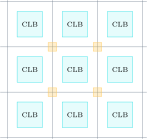

Model
- LUT: a
 -input lookup table is a
-input lookup table is a  -bit memory read through a multiplexer tree: any function of inputs in one block, with the same delay.
-bit memory read through a multiplexer tree: any function of inputs in one block, with the same delay. - Logic block (CLB, slice): several LUTs, flip-flops at their outputs, multiplexers to combine LUTs into wider functions, a fast carry chain for adders.
- Routing: horizontal and vertical wire segments meeting at programmable switch boxes; connection boxes attach block pins to wires. Routing dominates area and delay.
- Hard blocks: block RAM (synchronous, typically read data available on the clock edge after the address), DSP slices (multiply–accumulate), clock managers, high-speed transceivers.
- Configuration: SRAM bits set every LUT, mux and switch; the bitstream is loaded at power-up.
Picture

Logic blocks in a sea of routing; the switch boxes (amber) sit at the crossings.
Mapping a design
Synthesis decomposes the logic into functions of at most inputs (LUT mapping), packs LUTs and flip-flops into blocks, places them, routes the nets, and generates the bitstream. A -LUT has the same delay whatever function it holds, so FPGA mapping minimises the number of LUT levels.
Worked example
A 4-bit equality comparator has 8 inputs.
- 6-input LUTs: LUT1 computes from 6 inputs; LUT2 ANDs it with (3 inputs): 2 LUTs, 2 levels.
- 4-input LUTs: LUT1 , LUT2 , LUT3 ANDs them: 3 LUTs, 2 levels.
Any function of up to inputs costs one LUT, whatever its complexity: mapping counts inputs, not gates.
Intuition
An FPGA is a sheet of tiny memories and wires whose connections are themselves memory: hardware you rewrite like software.
Pitfall
The flexibility costs roughly an order of magnitude in area, speed and power against an ASIC. Designs that ignore the hard blocks (writing a multiplier in LUTs, a RAM in flip-flops) waste most of the chip.